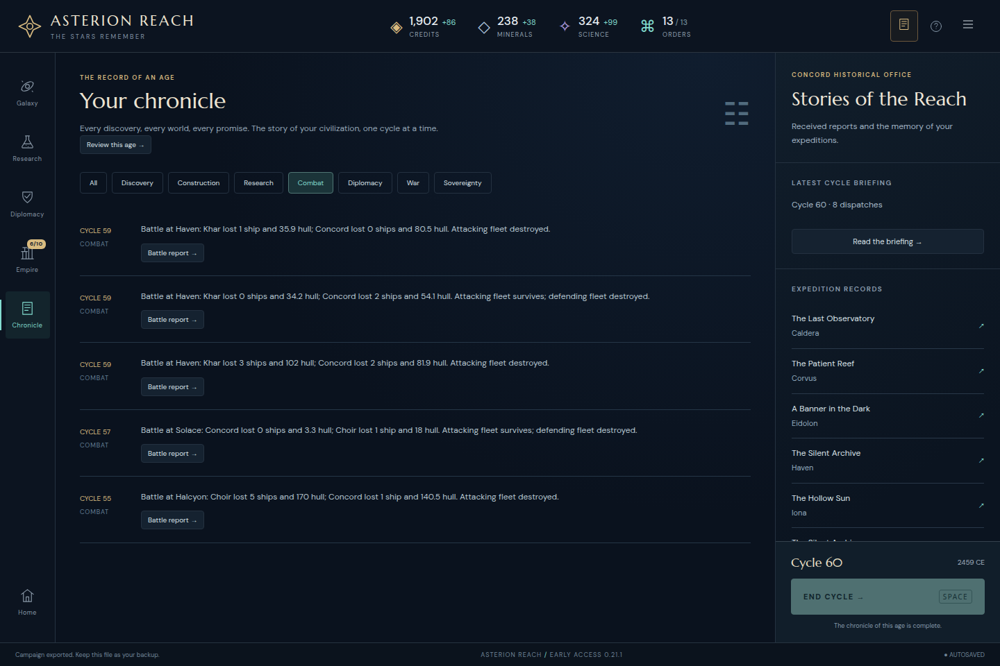

Original reopened victory screen

Copied unchanged from the player’s frozen screenshot. No second browser campaign was played by this reviewer.
Asterion Reach · Independent completed continuation
The actual default opening’s unedited cycle 12 export continues to its natural cycle 60 Transcendence victory through ordinary commands. Every actual export, including the postgame copy, matches exactly. No state patch or invented batch completion was needed.
One cross-version continuation: actual 0.21.0 cycle 12 → actual 0.21.1 victory 60. This report does not reconstruct cycles 1–12 or claim another gameplay sample. The reviewer did not operate the original UI campaign but authored parts of the engine; independence applies to receipt reconstruction.
All 178 initial/post-command states validate with finite nonnegative resources and orders. All 111 post-import observations match their turn and eight displayed resource/order values. Two startup observations precede import and are excluded. All 137 original continuation files used here, plus the original starting export, remain unchanged.
The final save contains 5 worlds, 40 population, 4 cruisers, 1 frigate and 1 scout; 12 completed technologies; 1902 credits and 238 minerals. Its 5 retained battle reports, saved round exchanges and 138 Chronicle entries are included in complete state equality.
Copied unchanged from the player’s frozen screenshot. No second browser campaign was played by this reviewer.
Five-error ledger, selection rules, export phases and limits · Exact normalized commands · Other successful UI receipts
The 54/55 exports precede player responses to the observed wars; 56 precedes emergency repairs; 59 precedes the final turn. Both 60 exports are 118,420 bytes with the same hash before and after Chronicle, retained battles, final network and conclusion inspection.
| Cycle | Actual original file | Full state |
|---|---|---|
| 20 | 036-asterion-reach-cycle-20.json | Exact |
| 30 | 056-asterion-reach-cycle-30.json | Exact |
| 38 | 069-asterion-reach-cycle-38.json | Exact |
| 40 | 070-asterion-reach-cycle-40.json | Exact |
| 50 | 083-asterion-reach-cycle-50.json | Exact |
| 54 | 089-asterion-reach-cycle-54.json | Exact |
| 55 | 092-asterion-reach-cycle-55.json | Exact |
| 56 | 098-asterion-reach-cycle-56.json | Exact |
| 59 | 107-asterion-reach-cycle-59.json | Exact |
| 60 | 109-asterion-reach-cycle-60.json | Exact |
| 60 | 118-asterion-reach-cycle-60.json | Exact |

The reports’ saved operation turns are 55, 57 and 59; arrival views occur at 56, 57 and 60. These are engine phases, not rewritten dates. Current formations are never substituted for saved participants.
Rules commit 648c1f53de5f37d4df012c6b7e9994fb9574819c has the same 14 engine modules as frozen build base 3c6e822211e380510ddd387a24d3f021dc4bb36b. The actual 0.21.1 build was made 2026-10-29T03:07:29.898Z. Its index, guide, JavaScript, CSS and build metadata are fingerprinted separately.
Starting cycle 12 bytes:d8bf73702ea980fd3b3f7079fd7a31fe0e2d09ce4bdaa1704b68355bef14a45c
Both actual final export bytes:96e011b3394a25084fdd128d082bb71039678ef7c38c0d62ef8ace7c27041f72
Final canonical serialized state:c7bc2aaa0c13263b844e133abb3a7473ffc0567117644e3f0286d6caa73b5c63
Canonical comparison is complete JSON.stringify state after parsing, preserving key and array order. No saved fields are stripped. Every command’s returned result and full next state also match execution after an independent JSON restore.
Results · Command answers/state hashes · Observation checks · Event-state chronology · Original input fingerprints · Source and build pins · Artifact manifest
node replay.mjs --repo /path/to/repo --original /path/to/frozen-continuation --input /path/to/original-cycle12.json --build /path/to/frozen-0.21.1-build --out /tmp/asterion-final-rerun
Runner · Requirements and interpretation. Node and Git only; no browser, dependencies or network required. The closed log through request 119 is hard-pinned. Use a separate output directory to preserve this bundle.
Earlier through30, through40 and through50 bundles remain unchanged. Their cumulative validations and the JSON reload branches are not additional campaign outcomes. No optimal-play, win-rate or single-feature causal claim is made.